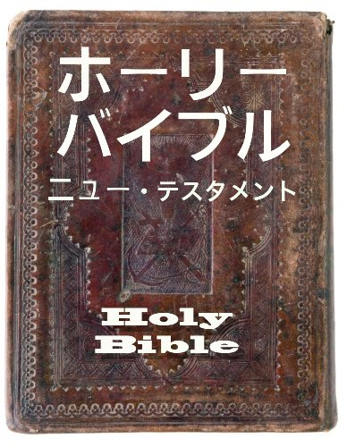

物語の終わり（ヨハネの黙示録）
イエスの信者であることでどのような試練に直面しようと、私たちには、神が歴史を支配されていることを知っているという揺るぎない確信があります。 神は物語の終わりをご存知で、そのことは常に喜びをもたらしてくれます。
ヨハネの黙示録の書
ヨハネの黙示録の書は、使徒ヨハネがギリシャのパトモス島に亡命していたときに与えられた未来像の記録です。聖書の中で読むのが最も難しい書かもしれません。ヨハネの黙示録は、イエスの信者が非常に強い迫害を受けている時代に書かれました。多くの学者は、ヨハネが当時の読み手によく理解されていた一種の暗号か記号を使用してそれを書いた可能性があるとしています。
象徴している事柄やイメージを理解するのは難しいですが、ヨハネの黙示録は少なくとも一度は読む価値があります。ヨハネの黙示録第1章第3節は、読んだ人への祝福を約束しています。7つの教会への手紙（黙示録2-3）は、現代の教会を対象にしても当てはまる言葉を数多く含んだ内容です。また、旧約聖書の預言者の書を読んだことがあるなら、書くスタイルと画像や記号の使用方法の類似点が非常に興味深いことがわかります。
ヨハネの黙示録の他を読まなかったとしても、少なくとも最後の章、第22章は読むべきです。そこでは、天国に帰るときに私たちを待っているものへの大きな希望が読み取れます。